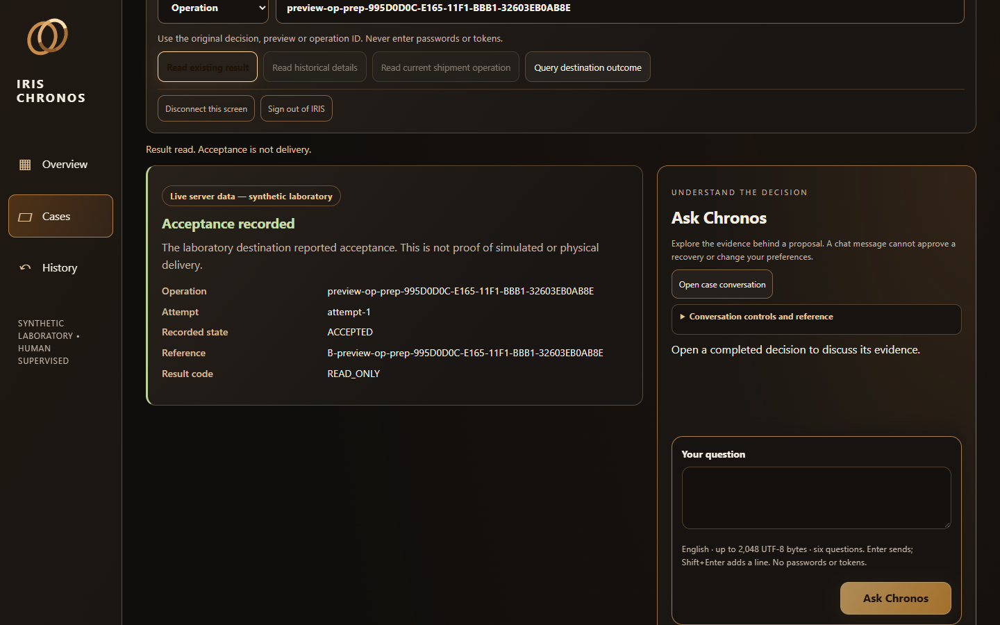
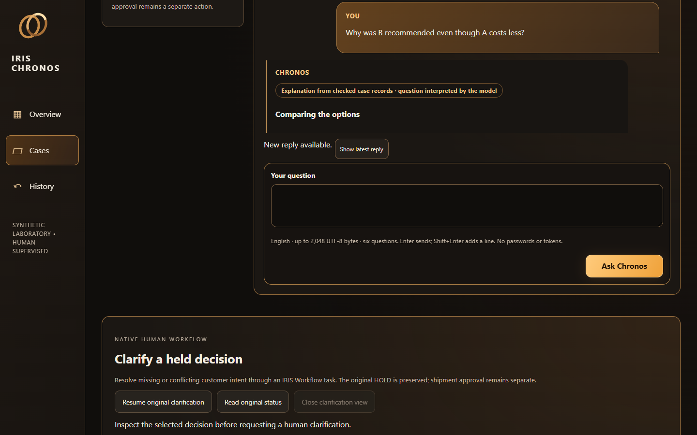

Earlier recovery walkthrough
Historical recording: English captions and screenshots from the 407r2 run on IRIS 154; this video does not demonstrate all 1.1 features. The synthetic destination accepts B before the browser loses the reply.
Download MP4
Earlier receipt experiments
Lost reply · one B recovery
IRIS and the independent destination agree. Reload opens the same operation, attempt and acceptance reference.
Reference digest at confirmation, after reload and at the destination 06df5d2829240785.
HTTP 503 · one A recovery
A local fixture returns 503 for the original. Chronos reads its definitive closure. One reconciliation takes the same queued recovery from UNKNOWN to ACCEPTED.
Reference digest after reconciliation, after reload and at the destination c23faf61d3472af4.
Visual Trace · original AI Hub response
The recorded message body shows 2,164 tokens and a 2,479 ms SDK call interval. Open the IRIS graph.
Version 1.1.2 tested on real IRIS 154
A clean installation exercised HOLD, native human clarification, two live decisions and three live chat answers. One explicitly confirmed B recovery was accepted. Reload and mobile views reopened the same receipt; “Send it again” caused no second submission. The accounts, route and four services were closed.
Download 1.1.2 and its verification report. The report binds the exact application archive and records the limits: synthetic shipments, one local machine, no proof of physical delivery.


Review version 1.1.2 on your IRIS instance
Version 1.1.2 corrects chat opening after native human clarification and retains the checked case-conversation panel. Choose the live or model-free review route.
Open the jury acceptance checklist in the English installation guide. Prepare IRIS AI Hub Community 2026.3.0AI.154.0 x64 and the pinned local Qwen model. Follow the ambiguous case through the native Workflow clarification, ask why B was selected, inspect the separate preview and confirm once. Use “Resume conversation” to return to the same chat, then reopen the original receipt.
This page presents recorded evidence from synthetic cases. Live requests run in the installed IRIS instance.